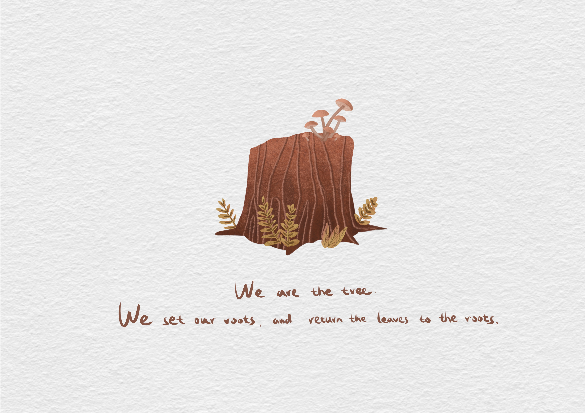

Final Work




Book Display

Our bodies have many similarities with nature. For example, the shapes of blood vessels and branches look very similar, the spots on our faces are very similar to the spots on the surface of fruits, and our hair is like seaweed. Not only that, we come from nature and are returned to nature after death, which I think is 'human nature'. I collected some materials, found some plants and animals that are similar to human bodies, and integrate them, such as skin texture and annual ring, hair and tree roots, spine and fern, etc. I hope to show that we are one with nature by connecting the human body with nature. This project is about exploring the commonalities between the human body and nature. It is a children's picture book.